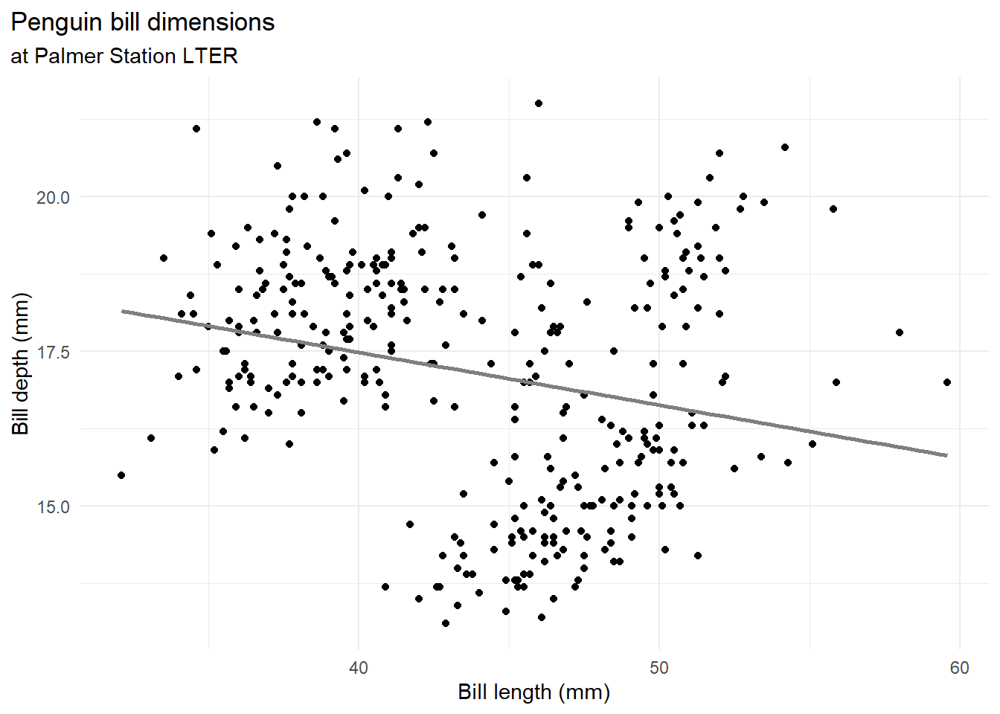
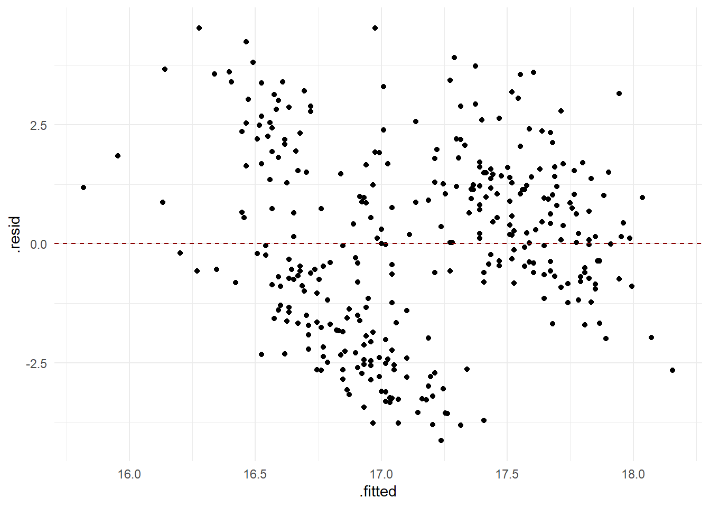
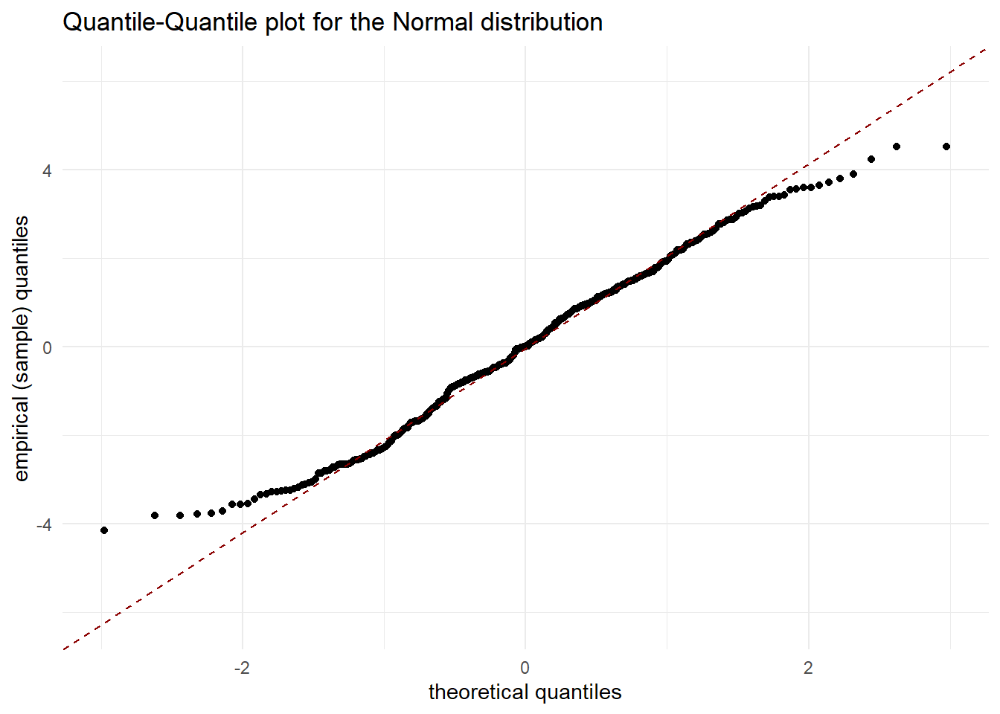
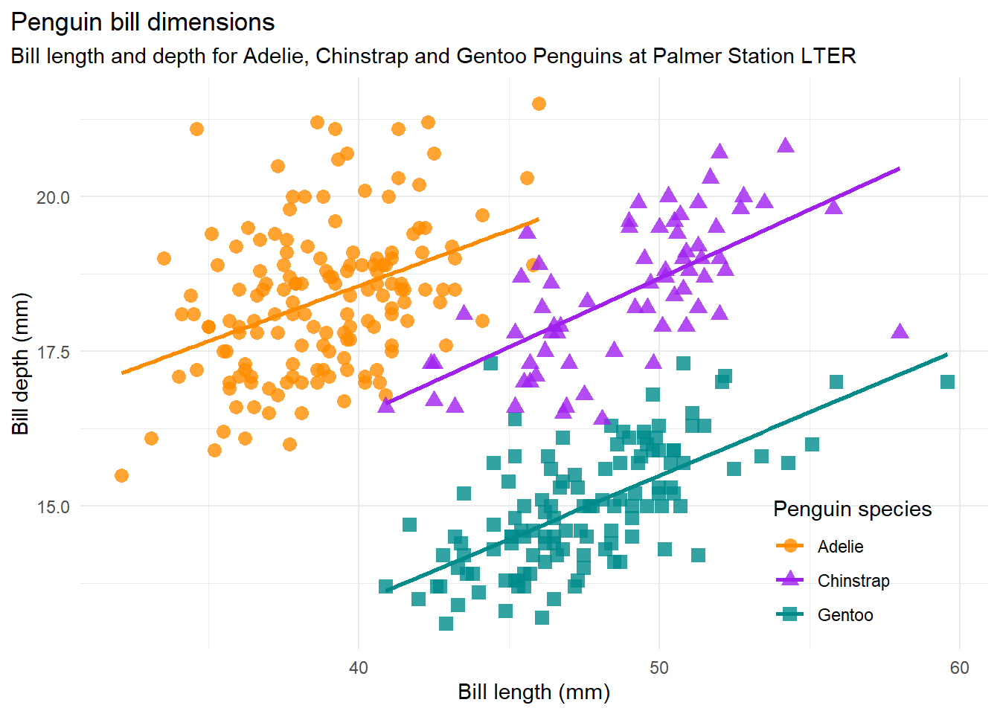
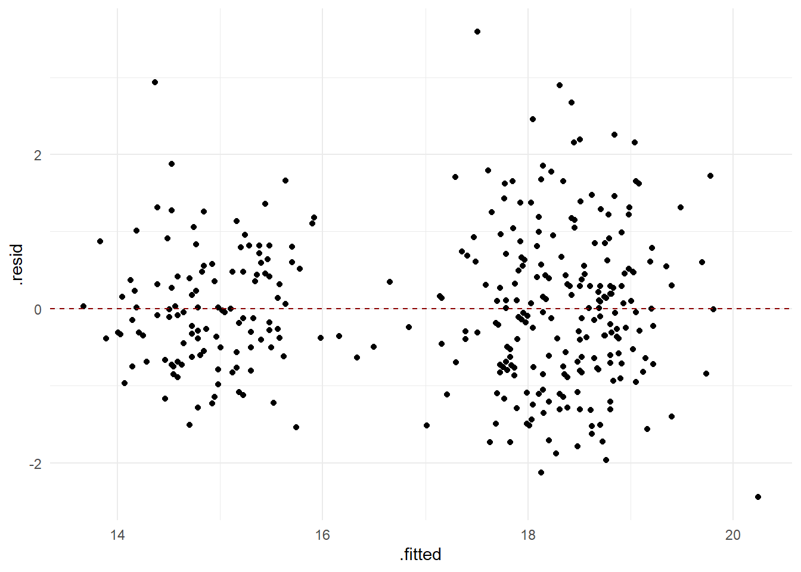
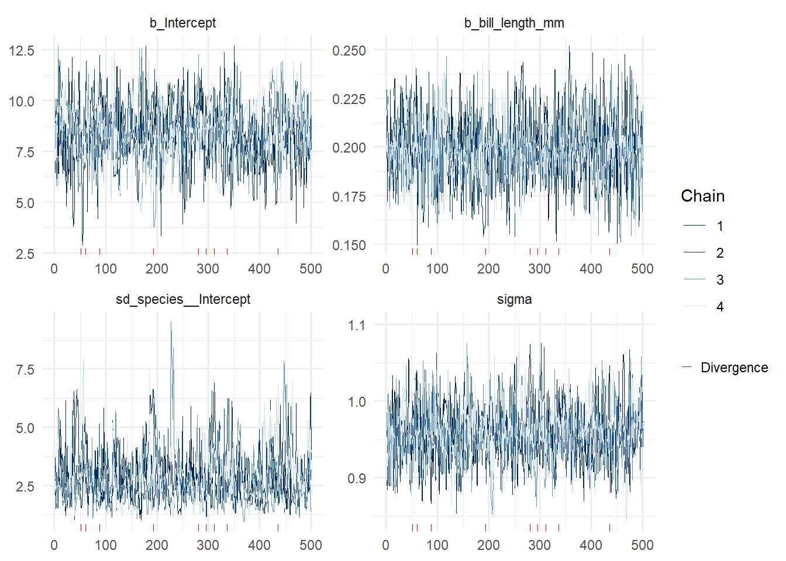
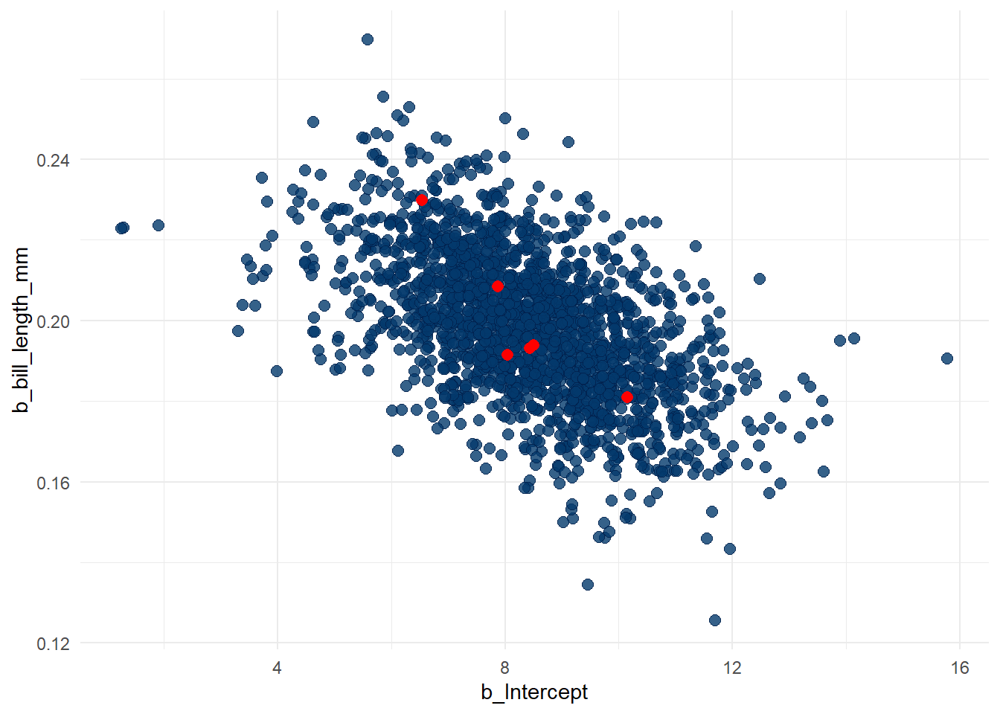
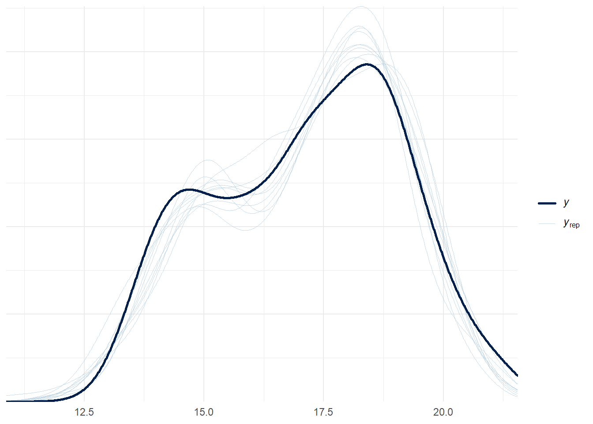

library(readr)
library(dplyr)
library(tidyr)
library(ggplot2)
library(lme4)
library(brms)
library(bayesplot)
library(palmerpenguins)Bayesian Generalised Linear Models
BADT 2026
Categorical predictors and interactions
Categorical independent variables or predictors
A categorical predictor can be treated as a factor (or dummy variable)
\[X_1 = \left\{ \begin{array}{lr} 1 & \text{if category A}\\ 0 & \text{if category not A} \end{array}\right.\]
A categorical predictor generates one regression model per level of the variable
\[\beta_0+\beta_1x_{1} = \left\{ \begin{array}{lr} \beta_0+\beta_1 & \text{if } x_1=1\\ \beta_0 & \text{if } x_1=0 \end{array}\right.\]
Generalising the linear model
The basic linear model
The model
\[y_i=\beta_0+\beta_1x_{i1}+\ldots+\beta_px_{ip}+\varepsilon_i\]
where \(\varepsilon_i\sim N(0,\sigma)\)
can alternatively be written as
\[Y|x_i\sim N(\beta_0+\beta_1x_{i1}+\ldots+\beta_px_{ip},\sigma)\]
or
\[Y|x_i\sim N(\mu(x_i|\beta_0,\beta_1,\ldots,\beta_p),\sigma)\]
where \(\mu(x_i|\beta_0,\beta_1,\ldots,\beta_p):=E(Y|x_i,\beta_0,\beta_1,\ldots,\beta_p)\) is the expected value of \(Y\) for \(x=x_i\) and parameters \(\beta_0,\ldots,\beta_p\).
In this model, the response variable \(Y\) is continuous and the model error is normally distributed with equal variance \(\sigma^2\).
For notation, I sometimes lump all parameters into one \(\theta=(\beta_0,\beta_1,\ldots,\beta_p,\sigma)\).
Note
For certain statistical tests, one has to assume that errors/residuals are independent, i.e. that observations \((y_i,x_i)\) are independent of each other.
From normal to any distribution family for the response variable
What if the response variable is
categorical, e.g. succeed/fail or gene expressions, or
discrete, e.g. a count of the number of individuals,
or some other continuous distribution?
Logistic regression
Consider a response variable with two categories, success or failure.
\[Y = \left\{ \begin{array}{lr} 1 & \text{if success}\\ 0 & \text{if failure} \end{array}\right.\]
The probability model for the response variable for a given value on the predictor can be a Bernoulli distribution
\[Y|x_i \sim Be(p(x_i))\] where the logarithm of the odds-ratio (logodds or logit) of the probability-parameter in the Bernoulli-distribution can be written as a linear function of the predictors
\[log\left(\frac{p(x_i)}{1-p(x_i)}\right) = \underbrace{\beta_0+\beta_1x_{i1}+\ldots+\beta_px_{ip}}_{linear \ term}\]
This relationship can be transformed into
\[\frac{p(x_i)}{1-p(x_i)} = e^{\beta_0+\beta_1x_{i1}+\ldots+\beta_px_{ip}}\] and finally into an expression where the probability-parameter is a logistic function of the linear term:
\[p(x_i)=\frac{e^{\beta_0+\beta_1x_{i1}+\ldots+\beta_px_{ip}}}{1+e^{\beta_0+\beta_1x_{i1}+\ldots+\beta_px_{ip}}}\]
Note that \(E(Y|x_i)=p(x_i)\)
A link function is a function that transforms the linear term into the expected value for the response variable
This model for binary response is therefore known as logistic regression.
GLM Binomial response variable
Let the \(i\)th observation be the number of successful trials among \(n_i\) independent trials. The response variable can be modelled by a Binomial distribution
\[Y|x_i\sim Bin(n_i,p(x_i))\]
The expected value of the proportion of successes is \(E(Y|x_i)=\frac{n_ip(x_i)}{n_i}=p(x_i)\).
A Binomial GLM is created by transforming the expected value with the logit link function as before into the linear model.
\[ \text{logit}(p(x_i)) = \log(p(x_i) / (1 - p(x_i))) = \beta_0+\beta_1x_{i1}+\ldots+\beta_px_{ip}\]
A logistic regression is a special case of Binomial GLM when there is only one trial per observation, i.e. n_i = 1.
GLM Poisson response variable
Consider a discrete response variable that is a count where the outcome space consists of natural numbers starting from 0, i.e. \(0, 1, 2, \ldots\) with no upper bound.
A Poisson distribution is a suitable probability distribution of this type of response variable if the counts come from an even process where events occur with a fixed intensity, \(\lambda\), events are independent, and events cannot occur at the same time.
Let the expected value of the response \(Y\) be a function of the linear model of predictors
\[\lambda(x_i)=e^{\beta_0+\beta_1x_{i1}+\ldots+\beta_px_{ip}}\]
When we log the expected value we get
\[\log(\lambda(x_i))=\beta_0+\beta_1x_{i1}+\ldots+\beta_px_{ip}\] A Poisson GLM has log as the link function
\[Y|x_i\sim Po(\lambda(x_i))\]
GLM hurdle model
Hierarchical modelling
So far the regression and classification models has operated under the assumption of observations to be conditional independent on the model. That is, they assume that our data on the response and predictor variables \((Y,X)\) is a random sample meaning that >the observed values for any one subject in the sample are independent of those for any other subject.
Caution
What if we can divide our data material into groups, where observations within a group are expected to be more similar compared to observations in other groups?
The assumption of independence is often violated in practice!
When this happens, it is useful to be able to specify statistical models for hierarchical (grouped) data.
Why is hierarchical modelling important?
Ignoring dependencies, result in underestimation of standard error and possible lower p-values in frequentist hypothesis testing.
An appropriate implementation of the hierarchical structures in data can reduce error in predictions, and increase the ability for the model to estimate and test associations.
An alternative would be to estimate one function per group of independent samples, but that leaves us with several models with possible poorer performances per model. With this in mind, hierarchical modeling can be used to build one model estimated from all data, and allow for sharing information between groups of data.
When basic assumptions are not met, there is something wrong with the model. Adding a hierarchical structure is one way to improve a model for inference.
Example Penguins
Here is an example of results will drastically change when groups are considered in an analysis.
db <- penguins %>%
filter(!is.na(flipper_length_mm), !is.na(bill_length_mm), !is.na(body_mass_g))The palmerpenguins data
The palmerpenguins data contains size measurements for three penguin species observed on three islands in the Palmer Archipelago, Antarctica. This data set is being used for education of statistics and data science.

Association between bill length and bill depth
Let \(y=\text{"Bill depth in mm"}\) and \(x=\text{"Bill length in mm"}\)
We model their linear association by a simple linear regression
\[y_i = \beta_0 + \beta_1 x_i + \varepsilon_i\]
where \(\varepsilon_i \sim N(0,\sigma)\) for all pairs of observations \(i=1,\ldots,n\)
Caution
What could be a potential weakness in choosing a linear regression model for testing the association between the two variables?
In this course, we expect that you can account for the assumptions behind a linear regression model.
ggplot2::theme_set(ggplot2::theme_minimal())ggplot(data = db,
aes(x = bill_length_mm,
y = bill_depth_mm)) +
geom_point() +
scale_color_manual(values = c("darkorange","purple","cyan4")) +
labs(title = "Penguin bill dimensions",
subtitle = "at Palmer Station LTER",
x = "Bill length (mm)",
y = "Bill depth (mm)") +
theme(plot.title.position = "plot",
plot.caption = element_text(hjust = 0, face= "italic"),
plot.caption.position = "plot") +
geom_smooth(method = "lm", formula = 'y ~ x', se = FALSE, color = "gray50")
mod <- lm(bill_depth_mm ~ bill_length_mm,data = db)
s <- summary(mod)The linear association (the slope parameter) is estimated to be negative (-0.085) and significantly different from zero (95th \(CI_{\beta_1} = (-0.1225253,-0.0475173)\), p-value < 0.05).
s$coefficients Estimate Std. Error t value Pr(>|t|)
(Intercept) 20.88546832 0.84388321 24.749240 4.715137e-78
bill_length_mm -0.08502128 0.01906694 -4.459093 1.119662e-05ggplot(mod, aes(x = .fitted, y = .resid)) +
geom_point() +
geom_hline(yintercept = 0, col = 'darkred', linetype = "dashed")Warning: `fortify(<lm>)` was deprecated in ggplot2 4.0.0.
ℹ Please use `broom::augment(<lm>)` instead.
ℹ The deprecated feature was likely used in the ggplot2 package.
Please report the issue at <https://github.com/tidyverse/ggplot2/issues>.
Residual analysis
- Check assumption of independence and equal variance of residuals
ggplot(mod, aes(x = .fitted, y = .resid)) +
geom_point() +
geom_hline(yintercept = 0, col = 'darkred', linetype = "dashed")
- Check assumption of normally distributed residuals
ggplot(mod, aes(sample = .resid)) +
stat_qq() + stat_qq_line(col='darkred',linetype='dashed') +
xlab('theoretical quantiles') +
ylab('empirical (sample) quantiles') +
ggtitle("Quantile-Quantile plot for the Normal distribution")
Warning
Is it justified to make the assumptions that the residuals are independent identically and normally distributed?
A hierarhical model considering groups in data
From the analysis above, we conclude that there is something odd with the model. It odd that there should be a negative association between the length and depth of a bill, and the residual analysis induces some discomfort in making conclusions from the model.
The data material consists of observations from three species, which constitute three groups where one can expect that the variation between groups is larger than the variation within groups. What if the relationship between bill length and bill depth looks different for different species?

Let us investigate by visualising the data where we separate the observations from the three groups. Here the visualisation is made by fitting a linear model per group.
bill_len_dep <- ggplot(data = db,
aes(x = bill_length_mm,
y = bill_depth_mm,
group = species)) +
geom_point(aes(color = species,
shape = species),
size = 3,
alpha = 0.8) +
geom_smooth(method = "lm", formula = 'y ~ x',se = FALSE, aes(color = species)) +
scale_color_manual(values = c("darkorange","purple","cyan4")) +
labs(title = "Penguin bill dimensions",
subtitle = "Bill length and depth for Adelie, Chinstrap and Gentoo Penguins at Palmer Station LTER",
x = "Bill length (mm)",
y = "Bill depth (mm)",
color = "Penguin species",
shape = "Penguin species") +
theme(legend.position = c(0.85, 0.15),
plot.title.position = "plot",
plot.caption = element_text(hjust = 0, face= "italic"),
plot.caption.position = "plot")
bill_len_dep
Here we can note that within each group now there is a positive linear association between bill length and bill depth.
Simpson’s paradox, or the Yule–Simpson effect, is a phenomenon in probability and statistics, in which a trend appears in several different groups of data but disappears or reverses when these groups are combined. It is sometimes given the descriptive title reversal paradox or amalgamation paradox. data-to-viz.com
A linear model with random and fixed effects
Here is one way to model hierarchies in data.
Let \(y_{ij}\) be the \(i\)th observation from species \(j\) given a fixed \(x_{ij}\), where \(i=1,\ldots,n\) and \(j=1,2,3\).
\[y_{ij} = \beta_{0j} + \beta_1 x_{ij} + \varepsilon_{ij}\]
where \(E(\varepsilon_{ij})=0\) and \(V(\varepsilon_{ij})=\sigma^2\)
The variance parameter \(\sigma^2\) is the variation in the model residuals.
\[y_{ij} = \beta_{0} + u_{j} + \beta_1 x_{ij} + \varepsilon_{ij}\]
where \(E(u_j)=0\) and \(V(u_j)=\tau^2\).
Now we have a model where we divide the variance into variance due to random error for the model and variance due to variation between groups.
The parameter \(\beta_1\) is a fixed effect because the slope is the same for all groups.
The term \(u_j\) is called a random effect because it takes different values for different groups \(j = 1,2,3\) (we have three species of penguins).
We can also assume the \(u_j \sim N(0,\tau^2)\)
The variance parameter \(\tau^2\) is between-group heterogeneity. Here it denotes the variance in the random intercepts.
A model with fixed and random effects (a.k.a a linear mixed model) can be estimated by maximum likelihood or Bayesian inference.
Note
In some cases, it can be justified to consider that the slope might differ between groups. If so, a random effect on the slope can be added.
Maximum likelihood estimation
Here I have applied REstricted Maximum Likelihood (REML). The way of specifying the models using user-friendly software is
rmod <- lme4::lmer(bill_depth_mm~bill_length_mm + (1|species), data = db)summary(rmod)Linear mixed model fit by REML ['lmerMod']
Formula: bill_depth_mm ~ bill_length_mm + (1 | species)
Data: db
REML criterion at convergence: 959.5
Scaled residuals:
Min 1Q Median 3Q Max
-2.5632 -0.7210 -0.0507 0.5814 3.7654
Random effects:
Groups Name Variance Std.Dev.
species (Intercept) 6.6319 2.5753
Residual 0.9089 0.9533
Number of obs: 342, groups: species, 3
Fixed effects:
Estimate Std. Error t value
(Intercept) 8.28702 1.68309 4.924
bill_length_mm 0.19898 0.01747 11.390
Correlation of Fixed Effects:
(Intr)
bll_lngth_m -0.468Residual analysis
- Check assumption of independence and equal variance of residuals
df_res <- data.frame(.fitted=fitted(rmod),.resid = resid(rmod), species = db$species)
ggplot(df_res, aes(x = .fitted, y = .resid)) +
geom_point() +
geom_hline(yintercept = 0, col = 'darkred', linetype = "dashed")
- Check assumption of normally distributed residuals
ggplot(df_res, aes(sample = .resid)) +
stat_qq() + stat_qq_line(col='darkred',linetype='dashed') +
xlab('theoretical quantiles') +
ylab('empirical (sample) quantiles') +
ggtitle("Quantile-Quantile plot for the Normal distribution")
Note
Now it looks better !
Testing the fixed effect in the hierarhical model
I am interested in testing if there is a linear association.
I can test using a confidence interval
ci <- confint(rmod)A 95th confidence interval of the slope parameter based on the profile likelihood method is derived to be \(CI_{\beta_1}= (0.1641772,0.2328453)\), i.e. a positive linear association that is statistically different from zero at the 5%’s significance level.
When my model is estimated with a restricted maximum likelihood, using a likelihood ratio test can be wrong since the likelihoods are conditional on different values of a so called nuisance parameter.
Then I can implement the maximum likelihood without a restriction (which can be problematic for the optimisation), or
Implement the hierarchical model in a Bayesian framework and test using suitable methods therein
Bayesian GLMMs
In general, maximum likelihood estimation is simple to implement in functions as it does not require a specification of the prior, nor advanced sampling.
I recommend two bayesian software for GLMMs offering the most complete support for Bayesian statistical regression models which generates model code via functions that look similar to other ways of specifying models in OLS and GLM with maximum likelihood based inference.
BRMS using R
Bambi using Python
Bayesian model specification
A Bayesian specification of the model made in “tilde”-format can be
- Likelihood
\[Y_{ij}|\beta_{0},\beta_1,\sigma,x \sim N(\beta_{0} + u_j + \beta_1 x_{ij},\sigma)\]
\[u_j|\tau \sim N(0,\tau)\]
- The prior is derived based on the following marginal distributions
\[\beta_0\sim N(\mu_{\beta_0},\sigma_{\beta_0})\] \[\beta_1\sim N(\mu_{\beta_1},\sigma_{\beta_1})\]
\[\tau \sim \Gamma(a_{\tau},b_{\tau})\]
\[\sigma \sim \Gamma(a_{\sigma},b_{\sigma})\]
where \(\mu_{\beta_0},\sigma_{\beta_0},\mu_{\beta_1},\sigma_{\beta_1},a_{\tau},b_{\tau},a_{\sigma},b_{\sigma}\) are hyper-parameters.
Bayesian penguins
bmod <- brms::brm(bill_depth_mm~bill_length_mm + (1|species), data = db, family=gaussian(), chains = 4,
iter = 1000, warmup = 500)Compiling Stan program...Start sampling
SAMPLING FOR MODEL 'anon_model' NOW (CHAIN 1).
Chain 1:
Chain 1: Gradient evaluation took 0.000161 seconds
Chain 1: 1000 transitions using 10 leapfrog steps per transition would take 1.61 seconds.
Chain 1: Adjust your expectations accordingly!
Chain 1:
Chain 1:
Chain 1: Iteration: 1 / 1000 [ 0%] (Warmup)
Chain 1: Iteration: 100 / 1000 [ 10%] (Warmup)
Chain 1: Iteration: 200 / 1000 [ 20%] (Warmup)
Chain 1: Iteration: 300 / 1000 [ 30%] (Warmup)
Chain 1: Iteration: 400 / 1000 [ 40%] (Warmup)
Chain 1: Iteration: 500 / 1000 [ 50%] (Warmup)
Chain 1: Iteration: 501 / 1000 [ 50%] (Sampling)
Chain 1: Iteration: 600 / 1000 [ 60%] (Sampling)
Chain 1: Iteration: 700 / 1000 [ 70%] (Sampling)
Chain 1: Iteration: 800 / 1000 [ 80%] (Sampling)
Chain 1: Iteration: 900 / 1000 [ 90%] (Sampling)
Chain 1: Iteration: 1000 / 1000 [100%] (Sampling)
Chain 1:
Chain 1: Elapsed Time: 1.867 seconds (Warm-up)
Chain 1: 1.325 seconds (Sampling)
Chain 1: 3.192 seconds (Total)
Chain 1:
SAMPLING FOR MODEL 'anon_model' NOW (CHAIN 2).
Chain 2:
Chain 2: Gradient evaluation took 8.1e-05 seconds
Chain 2: 1000 transitions using 10 leapfrog steps per transition would take 0.81 seconds.
Chain 2: Adjust your expectations accordingly!
Chain 2:
Chain 2:
Chain 2: Iteration: 1 / 1000 [ 0%] (Warmup)
Chain 2: Iteration: 100 / 1000 [ 10%] (Warmup)
Chain 2: Iteration: 200 / 1000 [ 20%] (Warmup)
Chain 2: Iteration: 300 / 1000 [ 30%] (Warmup)
Chain 2: Iteration: 400 / 1000 [ 40%] (Warmup)
Chain 2: Iteration: 500 / 1000 [ 50%] (Warmup)
Chain 2: Iteration: 501 / 1000 [ 50%] (Sampling)
Chain 2: Iteration: 600 / 1000 [ 60%] (Sampling)
Chain 2: Iteration: 700 / 1000 [ 70%] (Sampling)
Chain 2: Iteration: 800 / 1000 [ 80%] (Sampling)
Chain 2: Iteration: 900 / 1000 [ 90%] (Sampling)
Chain 2: Iteration: 1000 / 1000 [100%] (Sampling)
Chain 2:
Chain 2: Elapsed Time: 1.51 seconds (Warm-up)
Chain 2: 1.218 seconds (Sampling)
Chain 2: 2.728 seconds (Total)
Chain 2:
SAMPLING FOR MODEL 'anon_model' NOW (CHAIN 3).
Chain 3:
Chain 3: Gradient evaluation took 6.3e-05 seconds
Chain 3: 1000 transitions using 10 leapfrog steps per transition would take 0.63 seconds.
Chain 3: Adjust your expectations accordingly!
Chain 3:
Chain 3:
Chain 3: Iteration: 1 / 1000 [ 0%] (Warmup)
Chain 3: Iteration: 100 / 1000 [ 10%] (Warmup)
Chain 3: Iteration: 200 / 1000 [ 20%] (Warmup)
Chain 3: Iteration: 300 / 1000 [ 30%] (Warmup)
Chain 3: Iteration: 400 / 1000 [ 40%] (Warmup)
Chain 3: Iteration: 500 / 1000 [ 50%] (Warmup)
Chain 3: Iteration: 501 / 1000 [ 50%] (Sampling)
Chain 3: Iteration: 600 / 1000 [ 60%] (Sampling)
Chain 3: Iteration: 700 / 1000 [ 70%] (Sampling)
Chain 3: Iteration: 800 / 1000 [ 80%] (Sampling)
Chain 3: Iteration: 900 / 1000 [ 90%] (Sampling)
Chain 3: Iteration: 1000 / 1000 [100%] (Sampling)
Chain 3:
Chain 3: Elapsed Time: 2.097 seconds (Warm-up)
Chain 3: 2.264 seconds (Sampling)
Chain 3: 4.361 seconds (Total)
Chain 3:
SAMPLING FOR MODEL 'anon_model' NOW (CHAIN 4).
Chain 4:
Chain 4: Gradient evaluation took 7.2e-05 seconds
Chain 4: 1000 transitions using 10 leapfrog steps per transition would take 0.72 seconds.
Chain 4: Adjust your expectations accordingly!
Chain 4:
Chain 4:
Chain 4: Iteration: 1 / 1000 [ 0%] (Warmup)
Chain 4: Iteration: 100 / 1000 [ 10%] (Warmup)
Chain 4: Iteration: 200 / 1000 [ 20%] (Warmup)
Chain 4: Iteration: 300 / 1000 [ 30%] (Warmup)
Chain 4: Iteration: 400 / 1000 [ 40%] (Warmup)
Chain 4: Iteration: 500 / 1000 [ 50%] (Warmup)
Chain 4: Iteration: 501 / 1000 [ 50%] (Sampling)
Chain 4: Iteration: 600 / 1000 [ 60%] (Sampling)
Chain 4: Iteration: 700 / 1000 [ 70%] (Sampling)
Chain 4: Iteration: 800 / 1000 [ 80%] (Sampling)
Chain 4: Iteration: 900 / 1000 [ 90%] (Sampling)
Chain 4: Iteration: 1000 / 1000 [100%] (Sampling)
Chain 4:
Chain 4: Elapsed Time: 1.41 seconds (Warm-up)
Chain 4: 1.621 seconds (Sampling)
Chain 4: 3.031 seconds (Total)
Chain 4: Warning: There were 6 divergent transitions after warmup. See
https://mc-stan.org/misc/warnings.html#divergent-transitions-after-warmup
to find out why this is a problem and how to eliminate them.Warning: Examine the pairs() plot to diagnose sampling problemssummary(bmod)Warning: There were 6 divergent transitions after warmup. Increasing
adapt_delta above 0.8 may help. See
http://mc-stan.org/misc/warnings.html#divergent-transitions-after-warmup Family: gaussian
Links: mu = identity
Formula: bill_depth_mm ~ bill_length_mm + (1 | species)
Data: db (Number of observations: 342)
Draws: 4 chains, each with iter = 1000; warmup = 500; thin = 1;
total post-warmup draws = 2000
Multilevel Hyperparameters:
~species (Number of levels: 3)
Estimate Est.Error l-95% CI u-95% CI Rhat Bulk_ESS Tail_ESS
sd(Intercept) 2.95 1.21 1.38 6.06 1.01 626 718
Regression Coefficients:
Estimate Est.Error l-95% CI u-95% CI Rhat Bulk_ESS Tail_ESS
Intercept 8.38 1.64 5.48 11.80 1.01 622 609
bill_length_mm 0.20 0.02 0.17 0.23 1.00 1662 972
Further Distributional Parameters:
Estimate Est.Error l-95% CI u-95% CI Rhat Bulk_ESS Tail_ESS
sigma 0.96 0.04 0.89 1.03 1.00 1296 1148
Draws were sampled using sampling(NUTS). For each parameter, Bulk_ESS
and Tail_ESS are effective sample size measures, and Rhat is the potential
scale reduction factor on split chains (at convergence, Rhat = 1).plot(bmod)
brms::mcmc_plot(bmod,type="trace")
brms::mcmc_plot(bmod,pars=c("b_Intercept","b_bill_length_mm"),type="scatter")Warning: Argument 'pars' is deprecated. Please use 'variable' instead.
# investigate model fit
loo(bmod)
Computed from 2000 by 342 log-likelihood matrix.
Estimate SE
elpd_loo -472.0 14.6
p_loo 5.1 0.7
looic 944.1 29.2
------
MCSE of elpd_loo is 0.1.
MCSE and ESS estimates assume MCMC draws (r_eff in [0.6, 1.1]).
All Pareto k estimates are good (k < 0.7).
See help('pareto-k-diagnostic') for details.pp_check(bmod)Using 10 posterior draws for ppc type 'dens_overlay' by default.